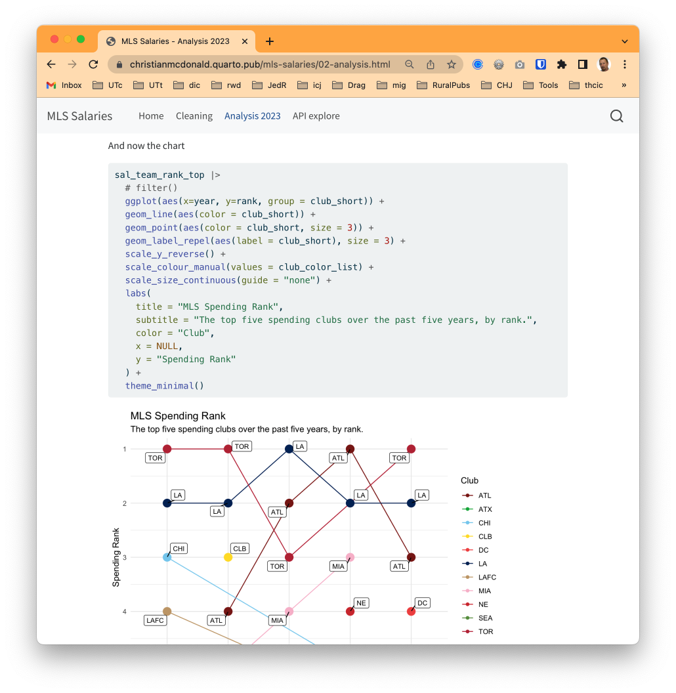
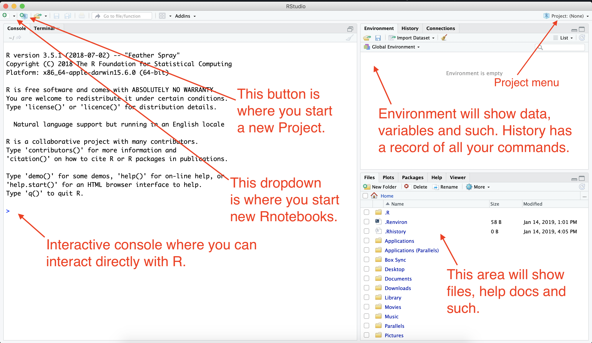
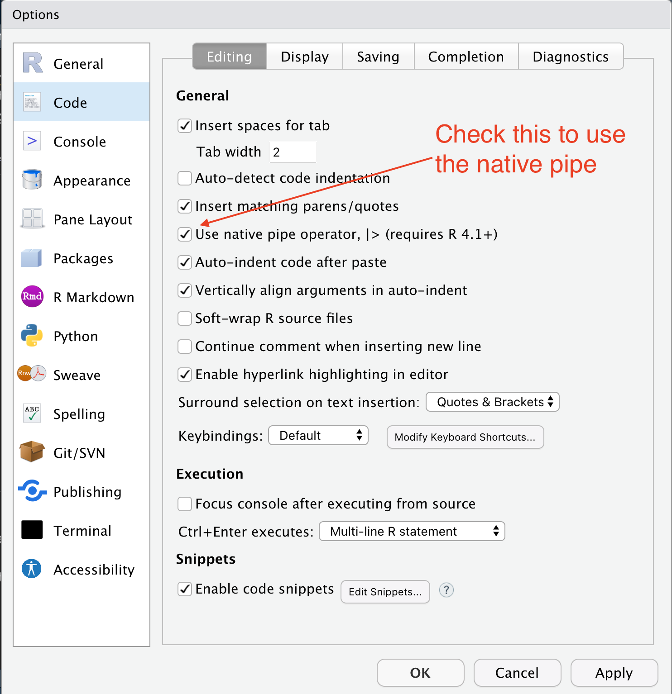

Introduction
Welcome to the Center for Health Journalism R course.
I still need to rework this a bit to include downloading the repo. Some other updates as well.
The purpose of this first module is to:
- Get you familiar with RStudio, the program we use to write R code.
- Get the first two days of material onto your computer.
- Introduce Quarto documents, which allow you to write notes and code together in the same document, just like this document that you are reading.
About Quarto, R and scripted journalism
Before we dive into RStudio and programming and all that, I want to show you where we are heading, so you can “visualize success”. We are teaching a method for data journalism that is repeatable, transparent and annotated. When you do your work, you should intersperse notes and code, creating a document your future self can easily catch up on, or that you can share with others. The best way to explain this is to show you an example.
- Go to this link in a new browser window: Major League Soccer salaries.
This is a website with all the code from a data journalism project. If you click on the navigation link for Cleaning you can read where the data come from and see all the steps I went through – with code and explanation – to process the data so I could work with it. And in the Analysis 2023 notebook you’ll see I set out with some questions for the data, and then I wrote the code to find my answers. Along with the way I wrote explanations of how and why I did what I did.

This website was created using Quarto and R, and the tool I used to write everything was RStudio.
This document you are reading is also a Quarto document. These lessons have explanations, instructions and code you can run right on your computer. You’ll also write and run some on your own code.
- The written words and explanations are written in a syntax called Markdown. It’s a common language used by programmers to create documentation. It’s understandable as text, but also easily converted to other formats.
- The programming code for data is writing in R in code chunks. We’ll introduce those in a moment.
Installing the software
You need to have both R and RStudio Desktop installed on your computer. Hopefully this is already done.
- You can find the installers here. You need both R and RStudio.
- If on a Mac, make sure you install RStudio into your Applications folder.
There is a chance we might have to install Quarto CLI, but don’t worry about it unless we need it.
RStudio tour
When you launch RStudio, you get a screen that looks like this:

Some things of note here:
- At the top-right of your RStudio window is a Project menu that should show the name of this project that you have open. If you click on the dropdown, you’ll see other options.
- We always want to be working in a project, which is basically a folder to hold your documents and data.
- Note the quadrant on the bottom right that includes the Files, Help and Viewer panes. You’ll likely be flipping back and forth among those.
- The Files pane shows all the documents in your project. This is where you go to open new documents in your project.
- The Help pane allows us to search for help using R.
- The Viewer pane is where our rendered documents display.
Updating preferences
There are some preferences in RStudio that I would like you to change. By default, the program wants to save the state of your work (all the variables and such) when you close a project, but that is typically not good practice. We’ll change that.
- Go to the Tools menu and choose Global Options.
- Under the General tab, uncheck the first four boxes.
- On the option “Save Workspace to .Rdata on exit”, change that to Never.
- Click Apply to save the change (but don’t close the box yet).

Next we will set some value is the Code pane.
- On the left options, click on the Code pane.
- Check the box for Use native pipe operator, |>.
- Click OK to save and close the box.

We’ll get into why we did this part later.
The R Package environment
R is an open-source language, which means that other programmers can contribute to how it works. It is what makes R beautiful.
What happens is developers will find it difficult to do a certain task, so they will write code that solves that problem and save it into an R “package” so they can use it later. They share that code with the community, and suddenly the R garage has an “ultimate set of tools” that would make Spicoli’s dad proud.
One set of these tools is the tidyverse developed by Hadley Wickham and his team at Posit. It’s a set of R packages for data science that are designed to work together. I highly recommend Wickham’s book R for data science, which is free.
There are also a series of useful tidyverse cheatsheets that can help you as you use the packages and functions from the tidyverse. We’ll refer to these throughout the course.
Install packages we’ll use
- Copy the code below and paste it into Console of RStudio (The left pane). Hit return to run the code.
install.packages(c("quarto", "rmarkdown", "tidyverse", "janitor"))You’ll see a bunch of response fly by in the Console. It’s probably all fine unless it ends the last response with an error.
This installs R software packages onto your computer we’ll use later. You only have to install these packages once.
Download Part 1 Course materials
Now we’ll download the course materials for the first couple of days of class. They are stored on Github.
- Go to this link: github.com/utdata/chjr-part1.
- Click on the big green Code button and choose Download zip
- Find the downloaded file and unzip the folder. Mac: Double-click on it. PC directions here
- Move the unzipped folder to your Desktop (or some other place you can find it).
- Go back to RStudio and go to File > Open Project. Go find your folder and open the file
chjr-part1.Rproj.
Go to the next chapter
We’re moving on to the next chapter: Importing & Cleaning